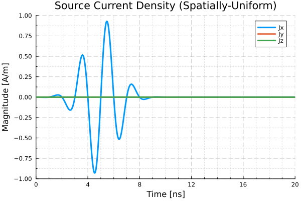
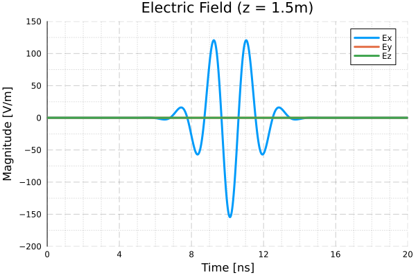
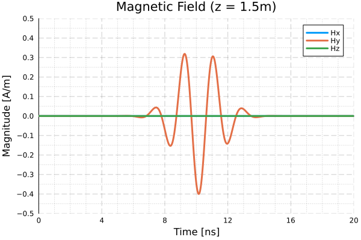

Tutorial
Define a propagation media
The propagation media of a model is assumed to be linear, time-invariant, and spatially-homogeneous.
When designing a model that will propagate in vacuum (free space), a pre-defined media is provided.
media::PropagationMedia_Simple = JefimenkoModels.CLASSICAL_VACUUMAlternatively, a propagation media with Real-valued permittivity ($\varepsilon$) and permeability ($\mu$) can be specified using Unitful values. Each term can be defined in your preferred choice of units, so long as they are dimensionally-equivalent to the reference units: $\varepsilon$ in [F/m] or [As/Vm], and $\mu$ in [N/A$^2$] or [Vs/Am].
epsilon = 8.854_188e-15 * u"(kA*s)/(V*m)"
mu = 1.256_637e-3 * u"(mV*s)/(A*m)"
c = 2.997_925e5 * u"km/s"
PropagationMedia_Simple(epsilon, mu, c)Define a source
When any of the source components is neglected, e.g. a source with only currents ($J$) or charges ($\rho$), a pair of pre-defined null sources are provided for convenience. The JefimenkoModels.NULL_CHARGE function can be used in place of either $\rho(\bar{r},t)$ function, and the JefimenkoModels.NULL_CURRENT function can be used in place of either $J(\bar{r},t)$ function.
In the current version of JefimenkoModels, source charge and current functions must be defined in a specific format. The functions should take two arguments: a UnitfulCoordinateSystem.AbstractCoordinate indicating the spatial position evaluated, and the Real-typed time in implied units of seconds. The functions should return a Real-valued number with implied units according to the following tables.
An update is planned that will enable Unitful time argument and return types. This will hopefully simplify the source design process and identify potential dimensional errors.
Table: Line Source Functions
| Function | Arg 1 | Arg 2 [Units] | Return Type [Units] |
|---|---|---|---|
| Electric charge density $\rho_e(\bar{r},t)$ | r::AbstractCoordinate | t::Real [s] | ::Real [C/m] |
| Magnetic charge density $\rho_h(\bar{r},t)$ | r::AbstractCoordinate | t::Real [s] | ::Real [Wb/m] |
| Electric current density $\bar{J_e}(\bar{r},t)$ | r::AbstractCoordinate | t::Real [s] | ::SVector{3,Real} [A] |
| Magnetic current density $\bar{J_h}(\bar{r},t)$ | r::AbstractCoordinate | t::Real [s] | ::SVector{3,Real} [V] |
Table: Surface Source Functions
| Function | Arg 1 | Arg 2 [Units] | Return Type [Units] |
|---|---|---|---|
| Electric charge density $\rho_e(\bar{r},t)$ | r::AbstractCoordinate | t::Real [s] | ::Real [C/m$^2$] |
| Magnetic charge density $\rho_h(\bar{r},t)$ | r::AbstractCoordinate | t::Real [s] | ::Real [Wb/m$^2$] |
| Electric current density $\bar{J_e}(\bar{r},t)$ | r::AbstractCoordinate | t::Real [s] | ::SVector{3,Real} [A/m] |
| Magnetic current density $\bar{J_h}(\bar{r},t)$ | r::AbstractCoordinate | t::Real [s] | ::SVector{3,Real} [V/m] |
Table: Volume Source Functions
| Function | Arg 1 | Arg 2 [Units] | Return Type [Units] |
|---|---|---|---|
| Electric charge density $\rho_e(\bar{r},t)$ | r::AbstractCoordinate | t::Real [s] | ::Real [C/m$^3$] |
| Magnetic charge density $\rho_h(\bar{r},t)$ | r::AbstractCoordinate | t::Real [s] | ::Real [Wb/m$^3$] |
| Electric current density $\bar{J_e}(\bar{r},t)$ | r::AbstractCoordinate | t::Real [s] | ::SVector{3,Real} [A$^2$] |
| Magnetic current density $\bar{J_h}(\bar{r},t)$ | r::AbstractCoordinate | t::Real [s] | ::SVector{3,Real} [V$^2$] |
Construct a model
JefimenkoModels have a metadata::Dict provision. This dictionary is not currently used by the solver. Rather, it provides the user with a convenient place to store any desired metadata.
The following example produces a JefimenkoModel with a single one-meter line source on the x-axis. This source is characterized by a spatially-uniform continuous wave (CW) electric current.
using JefimenkoModels
using Unitful, UnitfulCoordinateSystems
using Unitful.DefaultSymbols: m, ns
model_line = let
# Single line source on x-axis from -0.5m to +0.5m
# Electric current only: spatially-uniform, x-directed, driven by 100 MHz CW sinusoid
a = CoordinateCartesian(-0.5m, 0.0m, 0.0m)
b = CoordinateCartesian( 0.5m, 0.0m, 0.0m)
Je(r̄::AbstractCoordinate, t_s::Real) = x̂ .* cos(2π*100e6*t_s) # t in s -> Je in A
source = LineSource_Straight{Float64}(a, b, NULL_CHARGE, NULL_CHARGE, Je, NULL_CURRENT)
metadata = Dict(:name => "Tutorial Example",
:charges => "None",
:currents => "Electric-Only"
:spatial_distribution => "Uniform",
:source_length => 1.0m,
:signal_type => "100 MHz CW")
JefimenkoModel{Float64}(CLASSICAL_VACUUM, [source], metadata)
endThe following example produces a JefimenkoModel for a one-meter diameter aperture source on the xy-plane and centered on the origin. This source is characterized by a spatially-uniform electric current and driven by a wideband transient pulse.
using JefimenkoModels
using Unitful, UnitfulCoordinateSystems
model_disk = let
# Surface disk source with radius 0.5m
# Electric current only: spatially-uniform, x-directed, driven by a transient pulse
ρ₀ = 0.5m
(t₀_s, f₀_Hz, β₀) = (5.0e-9, 500e6, 1.25)
sig(t_s::Real) = sin(2π*f₀_Hz*t_s) * exp(-β₀*(f₀_Hz*t_s)^2)
Je(r̄::AbstractCoordinate, t_s::Real) = x̂ .* sig(t_s-t₀_s) # t in s -> Jₑ in A
source = SurfaceSource_Disk{Float64}(ρ₀, NULL_CHARGE, NULL_CHARGE, Je, NULL_CURRENT)
metadata = Dict(:description=>"Uniform current over a 0.5m disk, stimulated by transient pulse signal.")
JefimenkoModel{Float64}(CLASSICAL_VACUUM, [source], metadata)
endCalculate the electromagnetic fields
The electromagnetic near-fields produced by the aperture source described above can be calculated by specifying an observation point and the desired time-domain.
# Observation location and time domain of interest
r = CoordinateCartesian(0.0m, 0.0m, 1.5m)
t = range(0.0ns, 20.0ns, length=800)
# Calculate the fields at r over the time domain
efield = map(t -> E(r,t,model_disk), t)
hfield = map(t -> H(r,t,model_disk), t)Inspecting the data on this specified time-domain, the source electric current density (spatially-uniform across the 1 meter diameter aperture) is

The electric field measured at the observation point is

And the magnetic field measured at the observation point is
